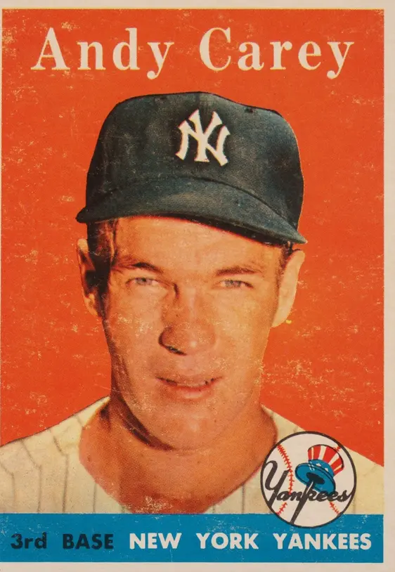

Andrew Arthur Carey "Handy Andy"
Career Highlights & Facts
(Facts are AI-generated and may require verification)
- Played third base in four consecutive World Series from 1955 to 1958.
- Was a second-generation major leaguer, as his father Joe played for the Washington Senators.
- Served two years in the U.S. Army during the Korean War, missing the 1952 and 1953 seasons.
Would you like to find out more about Andrew Arthur Carey?
Career Totals
| WAR | AB | H | HR | BA | R | RBI | SB | OBP | SLG | OPS | OPS+ |
|---|---|---|---|---|---|---|---|---|---|---|---|
| 9.9 | 2850 | 741 | 64 | .260 | 371 | 350 | 23 | .327 | .396 | .722 | 97 |
Statistics via Baseball-Reference.com
The Original Clue